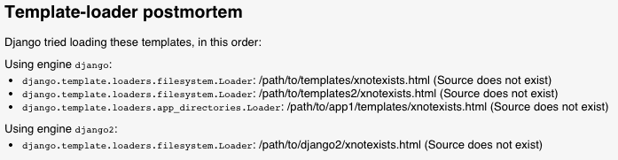
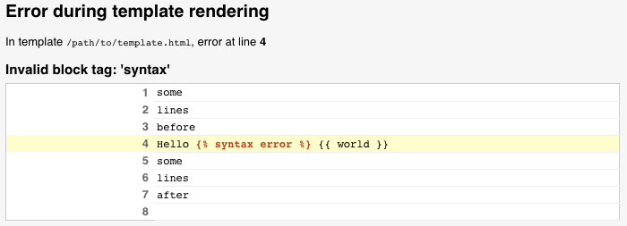

How to implement a custom template backend¶
Custom backends¶
Here’s how to implement a custom template backend in order to use another
template system. A template backend is a class that inherits
django.template.backends.base.BaseEngine. It must implement
get_template() and optionally from_string(). Here’s an example for a
fictional foobar template library:
from django.template import TemplateDoesNotExist, TemplateSyntaxError
from django.template.backends.base import BaseEngine
from django.template.backends.utils import csrf_input_lazy, csrf_token_lazy
import foobar
class FooBar(BaseEngine):
# Name of the subdirectory containing the templates for this engine
# inside an installed application.
app_dirname = 'foobar'
def __init__(self, params):
params = params.copy()
options = params.pop('OPTIONS').copy()
super().__init__(params)
self.engine = foobar.Engine(**options)
def from_string(self, template_code):
try:
return Template(self.engine.from_string(template_code))
except foobar.TemplateCompilationFailed as exc:
raise TemplateSyntaxError(exc.args)
def get_template(self, template_name):
try:
return Template(self.engine.get_template(template_name))
except foobar.TemplateNotFound as exc:
raise TemplateDoesNotExist(exc.args, backend=self)
except foobar.TemplateCompilationFailed as exc:
raise TemplateSyntaxError(exc.args)
class Template:
def __init__(self, template):
self.template = template
def render(self, context=None, request=None):
if context is None:
context = {}
if request is not None:
context['request'] = request
context['csrf_input'] = csrf_input_lazy(request)
context['csrf_token'] = csrf_token_lazy(request)
return self.template.render(context)
See DEP 182 for more information.
Debug integration for custom engines¶
The Django debug page has hooks to provide detailed information when a template error arises. Custom template engines can use these hooks to enhance the traceback information that appears to users. The following hooks are available:
Template postmortem¶
The postmortem appears when TemplateDoesNotExist is
raised. It lists the template engines and loaders that were used when trying to
find a given template. For example, if two Django engines are configured, the
postmortem will appear like:

Custom engines can populate the postmortem by passing the backend and
tried arguments when raising TemplateDoesNotExist.
Backends that use the postmortem should specify an origin on the template object.
Contextual line information¶
If an error happens during template parsing or rendering, Django can display the line the error happened on. For example:

Custom engines can populate this information by setting a template_debug
attribute on exceptions raised during parsing and rendering. This attribute is
a dict with the following values:
'name': The name of the template in which the exception occurred.'message': The exception message.'source_lines': The lines before, after, and including the line the exception occurred on. This is for context, so it shouldn’t contain more than 20 lines or so.'line': The line number on which the exception occurred.'before': The content on the error line before the token that raised the error.'during': The token that raised the error.'after': The content on the error line after the token that raised the error.'total': The number of lines insource_lines.'top': The line number wheresource_linesstarts.'bottom': The line number wheresource_linesends.
Given the above template error, template_debug would look like:
{
'name': '/path/to/template.html',
'message': "Invalid block tag: 'syntax'",
'source_lines': [
(1, 'some\n'),
(2, 'lines\n'),
(3, 'before\n'),
(4, 'Hello {% syntax error %} {{ world }}\n'),
(5, 'some\n'),
(6, 'lines\n'),
(7, 'after\n'),
(8, ''),
],
'line': 4,
'before': 'Hello ',
'during': '{% syntax error %}',
'after': ' {{ world }}\n',
'total': 9,
'bottom': 9,
'top': 1,
}
Origin API and 3rd-party integration¶
Django templates have an Origin object available
through the template.origin attribute. This enables debug information to be
displayed in the template postmortem, as well as
in 3rd-party libraries, like the Django Debug Toolbar.
Custom engines can provide their own template.origin information by
creating an object that specifies the following attributes:
'name': The full path to the template.'template_name': The relative path to the template as passed into the template loading methods.'loader_name': An optional string identifying the function or class used to load the template, e.g.django.template.loaders.filesystem.Loader.